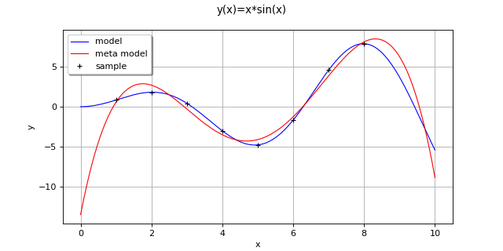
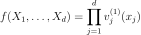
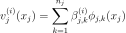
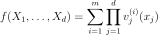

TensorApproximationAlgorithm¶
(Source code, png, hires.png, pdf)
{kind=link}
{kind=link}

-
class
TensorApproximationAlgorithm(*args)¶ Tensor approximation algorithm.
- Available constructors:
TensorApproximationAlgorithm(inputSample, outputSample, distribution, functionFactory, nk)
- Parameters
- inputSample, outputSample2-d sequence of float
The input random variables
 and the output samples
and the output samples  of a model evaluated apart.
of a model evaluated apart.- distribution
Distribution Joint probability density function
 of the physical input vector
of the physical input vector  .
.- functionFactory
OrthogonalProductFunctionFactory The basis factory.
- degreessequence of int
The size of the basis for each component Of size equal to the input dimension.
- maxRankint, optional (default=1)
The maximum rank
See also
Notes
TensorApproximationAlgorithm allows to perform a low-rank approximation in the canonical tensor format (refer to [rai2015] for other tensor formats and more details).
The canonical tensor approximation of rank
 reads:
reads:
The available alternating least-squares algorithm consists in successive approximations of the coefficients in the basis of the j-th component:

The full canonical tensor approximation of rank
 reads:
reads:
The decomposition algorithm can be tweaked using the key TensorApproximationAlgorithm-DecompositionMethod.
Examples
>>> import openturns as ot >>> dim = 1 >>> f = ot.SymbolicFunction(['x'], ['x*sin(x)']) >>> uniform = ot.Uniform(0.0, 10.0) >>> distribution = ot.ComposedDistribution([uniform]*dim) >>> factoryCollection = [ot.OrthogonalUniVariateFunctionFamily(ot.OrthogonalUniVariatePolynomialFunctionFactory(ot.StandardDistributionPolynomialFactory(uniform)))] * dim >>> functionFactory = ot.OrthogonalProductFunctionFactory(factoryCollection) >>> size = 10 >>> sampleX = [[1.0], [2.0], [3.0], [4.0], [5.0], [6.0], [7.0], [8.0]] >>> sampleY = f(sampleX) >>> nk = [5] * dim >>> maxRank = 1 >>> algo = ot.TensorApproximationAlgorithm(sampleX, sampleY, distribution, functionFactory, nk, maxRank) >>> algo.run()
Get the resulting meta model:
result = algo.getResult() metamodel = result.getMetaModel()
Methods
getClassName(self)Accessor to the object’s name.
getDistribution(self)Accessor to the joint probability density function of the physical input vector.
getId(self)Accessor to the object’s id.
getInputSample(self)Accessor to the input sample.
Maximum ALS algorithm iteration accessor.
getMaximumRadiusError(self)Maximum radius error accessor.
getMaximumResidualError(self)Maximum residual error accessor.
getName(self)Accessor to the object’s name.
getOutputSample(self)Accessor to the output sample.
getResult(self)Result accessor.
getShadowedId(self)Accessor to the object’s shadowed id.
getVisibility(self)Accessor to the object’s visibility state.
hasName(self)Test if the object is named.
hasVisibleName(self)Test if the object has a distinguishable name.
run(self)Compute the response surface.
setDistribution(self, distribution)Accessor to the joint probability density function of the physical input vector.
Maximum ALS algorithm iteration accessor.
setMaximumRadiusError(self, maximumRadiusError)Maximum radius error accessor.
setMaximumResidualError(self, …)Maximum residual error accessor.
setName(self, name)Accessor to the object’s name.
setShadowedId(self, id)Accessor to the object’s shadowed id.
setVisibility(self, visible)Accessor to the object’s visibility state.
-
__init__(self, *args)¶ Initialize self. See help(type(self)) for accurate signature.
-
getClassName(self)¶ Accessor to the object’s name.
- Returns
- class_namestr
The object class name (object.__class__.__name__).
-
getDistribution(self)¶ Accessor to the joint probability density function of the physical input vector.
- Returns
- distribution
Distribution Joint probability density function of the physical input vector.
- distribution
-
getId(self)¶ Accessor to the object’s id.
- Returns
- idint
Internal unique identifier.
-
getInputSample(self)¶ Accessor to the input sample.
- Returns
- inputSample
Sample Input sample of a model evaluated apart.
- inputSample
-
getMaximumAlternatingLeastSquaresIteration(self)¶ Maximum ALS algorithm iteration accessor.
- Returns
- maxALSIterationint
The maximum number of iterations for the alternating least-squares algorithm used for the rank-1 approximation.
-
getMaximumRadiusError(self)¶ Maximum radius error accessor.
- Returns
- maxRadiusErrorfloat
Convergence criterion on the radius during alternating least-squares algorithm used for the rank-1 approximation.
-
getMaximumResidualError(self)¶ Maximum residual error accessor.
- Returns
- maxResErrfloat
Convergence criterion on the residual during alternating least-squares algorithm used for the rank-1 approximation.
-
getName(self)¶ Accessor to the object’s name.
- Returns
- namestr
The name of the object.
-
getOutputSample(self)¶ Accessor to the output sample.
- Returns
- outputSample
Sample Output sample of a model evaluated apart.
- outputSample
-
getResult(self)¶ Result accessor.
- Returns
- result
TensorApproximationResult The result of the approximation.
- result
-
getShadowedId(self)¶ Accessor to the object’s shadowed id.
- Returns
- idint
Internal unique identifier.
-
getVisibility(self)¶ Accessor to the object’s visibility state.
- Returns
- visiblebool
Visibility flag.
-
hasName(self)¶ Test if the object is named.
- Returns
- hasNamebool
True if the name is not empty.
-
hasVisibleName(self)¶ Test if the object has a distinguishable name.
- Returns
- hasVisibleNamebool
True if the name is not empty and not the default one.
-
run(self)¶ Compute the response surface.
-
setDistribution(self, distribution)¶ Accessor to the joint probability density function of the physical input vector.
- Parameters
- distribution
Distribution Joint probability density function of the physical input vector.
- distribution
-
setMaximumAlternatingLeastSquaresIteration(self, maximumAlternatingLeastSquaresIteration)¶ Maximum ALS algorithm iteration accessor.
- Parameters
- maxALSIterationint
The maximum number of iterations for the alternating least-squares algorithm used for the rank-1 approximation.
-
setMaximumRadiusError(self, maximumRadiusError)¶ Maximum radius error accessor.
- Parameters
- maxRadiusErrorfloat
Convergence criterion on the radius during alternating least-squares algorithm used for the rank-1 approximation.
-
setMaximumResidualError(self, maximumResidualError)¶ Maximum residual error accessor.
- Parameters
- maxResErrfloat
Convergence criterion on the residual during alternating least-squares algorithm used for the rank-1 approximation.
-
setName(self, name)¶ Accessor to the object’s name.
- Parameters
- namestr
The name of the object.
-
setShadowedId(self, id)¶ Accessor to the object’s shadowed id.
- Parameters
- idint
Internal unique identifier.
-
setVisibility(self, visible)¶ Accessor to the object’s visibility state.
- Parameters
- visiblebool
Visibility flag.